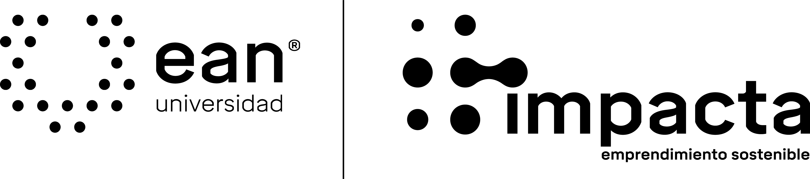
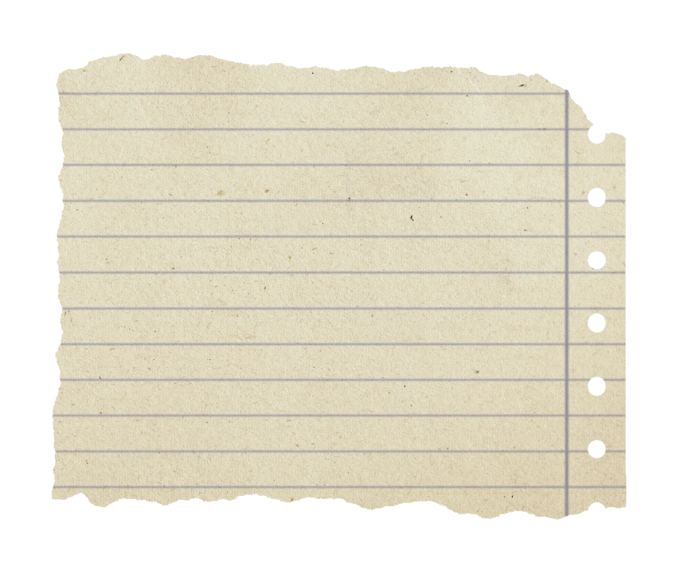
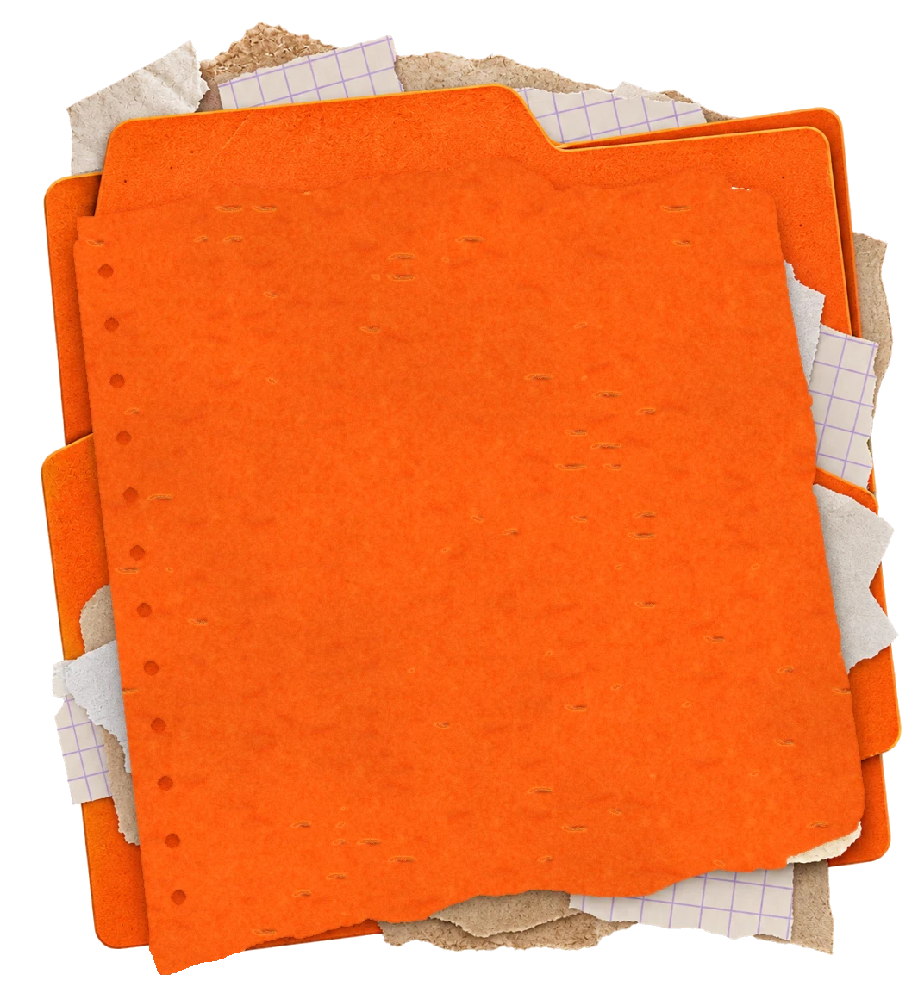
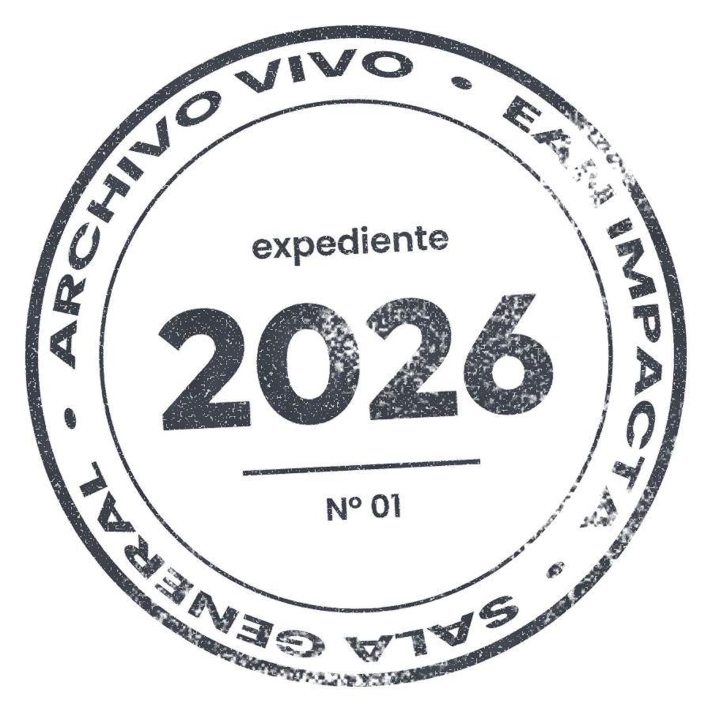
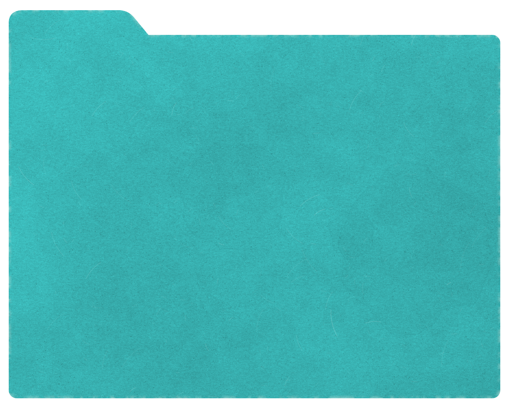
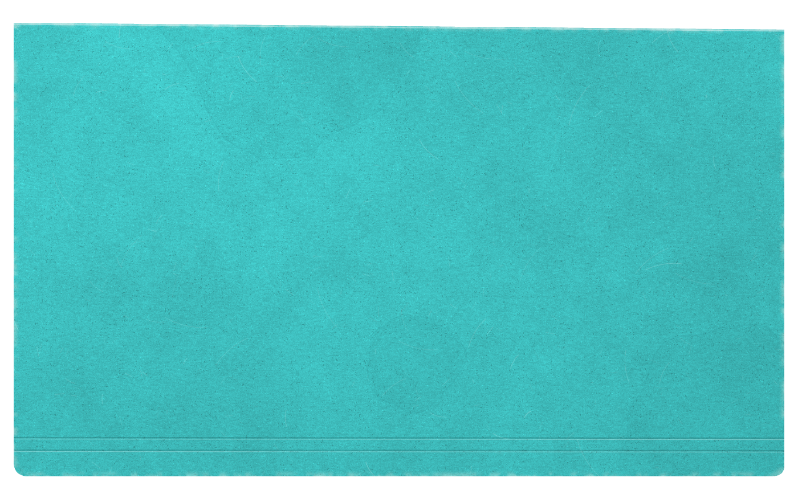

Dirección y propósito
Espacio reservado para responsabilidades verificadas y contribuciones concretas.

ARCHIVO 2026INFORME INSTITUCIONAL · 2026
Un archivo vivo para recorrer resultados confirmados, programas e historias de emprendimiento de Ean Impacta.




PANORAMA CONFIRMADO
Indicadores agregados del portafolio, con corte declarado en la fuente a enero de 2026.
ENERO — DICIEMBRE
La estructura cronológica está lista para recibir los hitos validados de 2026. No se publican hechos o eventos todavía no confirmados.
RECORRIDO TEMÁTICO
Una arquitectura preparada para conectar programas, proyectos, eventos y desarrollos con los mismos expedientes.
MESA TÁCTIL · ENSAMBLAJE
Arrastra la carpeta o usa el control. Base, documentos, pestaña y tapa conservan profundidad independiente.

PROGRAMASPROYECTOSRESULTADOS
Selecciona una ruta para consultar su estado.
ARCHIVO DE EMPRENDIMIENTOS
Datos del portafolio curado. Las correspondencias pendientes con el directorio analítico no se fusionan automáticamente.
EL EQUIPO HUMANO
La sección queda estructurada por contribuciones, no como una cuadrícula de retratos. Los nombres y fotografías se incorporarán únicamente después de validación y autorización.
Espacio reservado para responsabilidades verificadas y contribuciones concretas.
Relación futura con expedientes, cohortes y procesos del año.
Registro preparado para organizaciones y personas con autorización de publicación.
EL ARCHIVO CONTINÚA
Esta primera versión reúne el sistema visual, la arquitectura narrativa y el portafolio público preparado para la presentación institucional.
Volver al inicio ↑